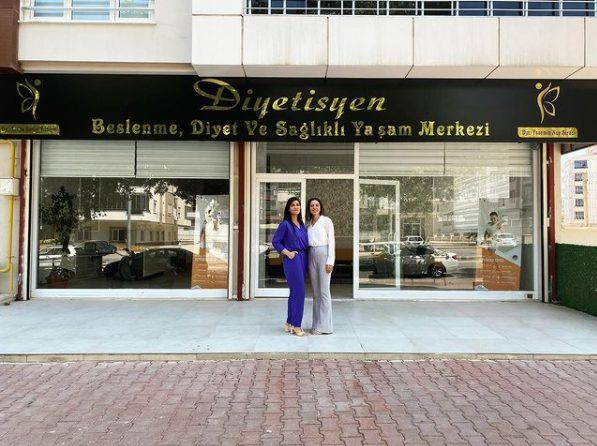

İki diyetisyen, tek bir hedef: size uygun plan
Atatürk Mahallesi 26. Cadde'de beslenme ve sağlıklı yaşam merkezi.

Beslenme programları
Hedefinize ve günlük düzeninize göre hazırlanan planlar.
Kilo verme programı
Yaşam tarzı, alışkanlıklar ve tahlil sonuçları dikkate alınarak sürdürülebilir bir beslenme planı hazırlanır.
Hastalıklarda beslenme
Diyabet, insülin direnci, tiroit ve kolesterol gibi durumlarda tedaviyi destekleyen beslenme planlanır.
Çocuk ve ergen beslenmesi
Büyüme dönemine uygun, okul ve aile düzenine uyumlu beslenme alışkanlıkları kazandırılır.
Gebelik ve emzirme
Gebelik ve emzirme dönemindeki artan ihtiyaçlar için dengeli ve güvenli bir beslenme düzeni kurulur.
Sporcu beslenmesi
Antrenman düzeni ve hedefe göre performansı ve toparlanmayı destekleyen bir plan hazırlanır.
Online danışmanlık
Görüntülü görüşme ve düzenli mesaj takibiyle şehir dışından da danışmanlık alınabilir.
Vücut kitle indeksinizi hesaplayın
Boy ve kilonuzu girin, VKİ değerinizi ve günlük yaklaşık su ihtiyacınızı görün.
Süreç nasıl işler?
Yasaklar listesi değil, adım adım kurulan bir düzen.
Tanışma görüşmesi
Beslenme alışkanlıklarınız, günlük düzeniniz ve hedefiniz konuşulur.
Ölçüm ve tahliller
Vücut analizi yapılır, varsa güncel tahlil sonuçlarınız değerlendirilir.
Kişiye özel plan
Sevdiğiniz besinleri ve yaşam düzeninizi hesaba katan bir plan hazırlanır.
Düzenli takip
Haftalık ya da iki haftalık kontrollerle plan sizin ilerlemenize göre güncellenir.
Size uygun bir saat bulalım
Formu doldurun ya da arayın, randevunuzu birlikte planlayalım.